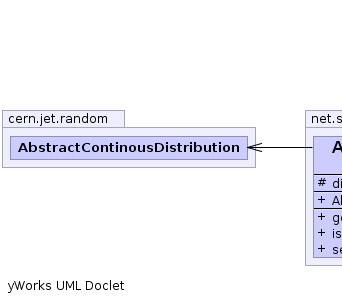
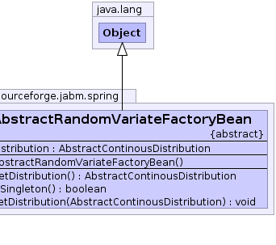

net.sourceforge.jabm.spring.AbstractRandomVariateFactoryBean
net.sourceforge.jabm.spring.AbstractRandomVariateFactoryBean
|
|||||||||
| PREV CLASS NEXT CLASS | FRAMES NO FRAMES | ||||||||
| SUMMARY: NESTED | FIELD | CONSTR | METHOD | DETAIL: FIELD | CONSTR | METHOD | ||||||||
java.lang.Object
public abstract class AbstractRandomVariateFactoryBean
|  |  |
| Field Summary | |
|---|---|
protected cern.jet.random.AbstractContinousDistribution |
distribution
The distribution used to generate the random variate. |
| Constructor Summary | |
|---|---|
AbstractRandomVariateFactoryBean()
|
|
| Method Summary | |
|---|---|
cern.jet.random.AbstractContinousDistribution |
getDistribution()
|
boolean |
isSingleton()
|
void |
setDistribution(cern.jet.random.AbstractContinousDistribution distribution)
The probability distribution used to generate the value of this bean. |
| Methods inherited from class java.lang.Object |
|---|
clone, equals, finalize, getClass, hashCode, notify, notifyAll, toString, wait, wait, wait |
| Field Detail |
|---|
protected cern.jet.random.AbstractContinousDistribution distribution
| Constructor Detail |
|---|
public AbstractRandomVariateFactoryBean()
| Method Detail |
|---|
public boolean isSingleton()
public cern.jet.random.AbstractContinousDistribution getDistribution()
public void setDistribution(cern.jet.random.AbstractContinousDistribution distribution)
distribution -
|
|||||||||
| PREV CLASS NEXT CLASS | FRAMES NO FRAMES | ||||||||
| SUMMARY: NESTED | FIELD | CONSTR | METHOD | DETAIL: FIELD | CONSTR | METHOD | ||||||||